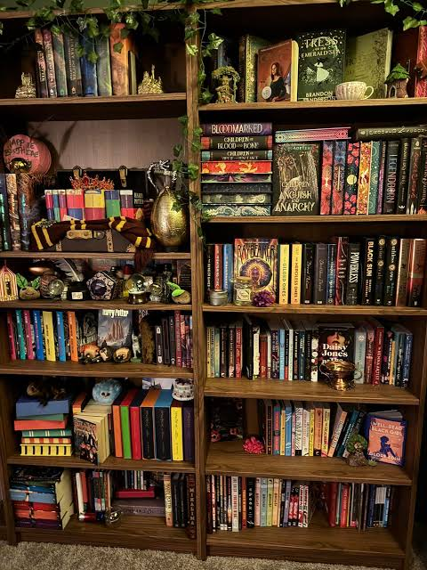
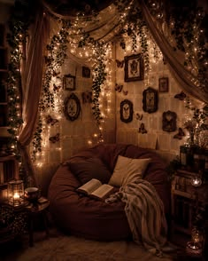

Moonlight Cafe provides book perchases and recommendations, as well as drinks and snack to enjoy while reading. Located in the heart of Ottawa, just minutes away from the Rideau Centre. Since 1990 our cafe-bookstore facilities offers a cozy and relaxing environment for book lovers to enjoy their favorite reads. Our staff is always available to provide recommendations and help you find your next great read. We also host book signings, readings, and other events throughout the year. Our aim is to create a welcoming and inspiring space for readers to be able to read without distractions.